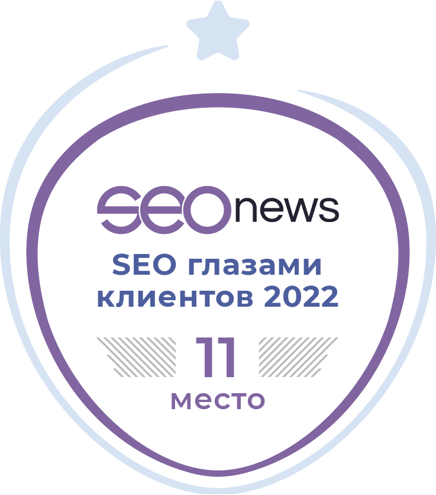
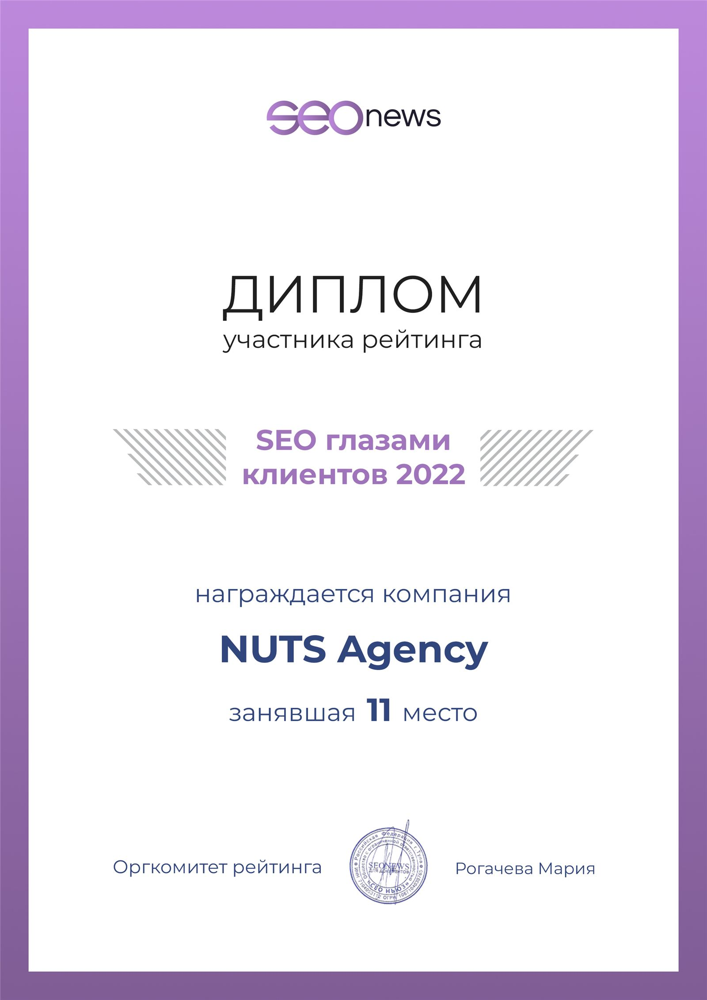

Ежегодно, с 2010 года, порталом seonews.ru проводится рейтинг-опрос «SEO глазами клиентов». Его целью является показать удовлетворенность клиентов услугами подрядчиков по услуге «продвижение сайтов». В прошлом году, наше интернет-агентство первый раз приняло участие в данном рейтинге, и заняло 28 место.
В этом году, мы снова решили принять участие, поскольку мы дорожим сотрудничеством с нашими клиентами, и искренне верим, что способны удовлетворить их любые потребности в сфере интернет-маркетинга. Также, кроме продвижения сайтов, наша компания оказывает услуги по разработке сайтов под ключ и настройке контекстной рекламы.
Как и в предыдущие годы, в рамках опроса, происходит общение с клиентами, и составляется статистика, позволяющая провести оценку всех участников исследования. К примеру есть несколько интересных моментов:
- Самый популярный срок работы с подрядчиком – 5 лет и более. Так ответило 38% опрошенных, и мы рады сообщить, что данную статистику также дополнили и клиенты нашей компании, ведь со многими из них, мы работаем с самого основания.
- Почти 85% клиентов оценивают работу подрядчика на 5 баллов. Большая часть клиентов всех участвующих в исследовании компаний довольны сотрудничеством, и планируют его продолжать.
- Более 87% клиентов, готовы порекомендовать своих подрядчиков по seo-продвижению другим компаниям или друзьям.
Было еще немало интересной статистики (ознакомиться с рейтингом можно тут по ссылке: https://rating.seonews.ru/rating-seo-glazami-klientov-2022/?rating_tab=2), но пожалуй перейдем к самому главному
Агентство Nuts Digital поднялось с прошлого года на 17 позиций, и заняло 11 место!
Вот как об этом написано на портале rating.seonews.ru: «NUTS Agency и R52.RU заняли 11 и 15 места, поднявшись на 17 и 16 позиций соответственно. »
Мы благодарны нашим клиентам за их доверие и рады сотрудничеству с ними. Мы рады будем видеть вас в числе наших клиентов — присоединяйтесь!
